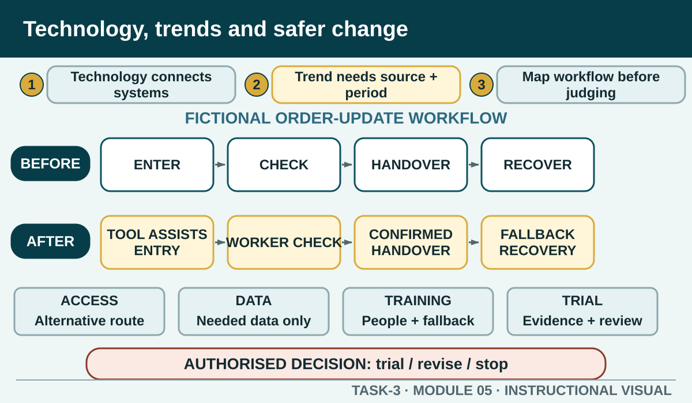

Evaluate current and emerging hospitality technology through workflow impact, evidence quality, customer and worker risks, fallback planning and an authorised improvement proposal.
Learning intention
What success looks like
I can recognise the main technology categories named in current hospitality-industry knowledge evidence.
I can test whether a trend claim is current, relevant and supported rather than repeating hype.
I can map benefits, risks, data, people, training and fallback across a workflow change.
I can suggest an improvement with a clear trial, authority boundary and review measure.
Core ideas
Build the complete picture
1
Hospitality technology supports connected systems
2
A trend needs a source, period and scope
3
Map the workflow before judging the tool
4
Balance benefit with operational and human risk
Visual explanation
Technology, trends and safer change

Use the canvas to judge whether a technology solves the service problem without creating unmanaged information, access or recovery risks.
Worked example
Hospitality technology supports connected systems
Current unit knowledge spans catering systems, applications for devices and computers, computer-aided despatch, food production, online booking, reservations, operations, financial and tracking systems, project management and social media. These categories describe functions; they do not require every workplace to use a particular product.
A fictional venue introduces a shared event-planning system. The change affects who enters updates, how versions are identified, which staff can view customer information and what happens when access is unavailable.
Question the room
A vendor calls its system essential for every modern venue. What is the strongest research response?
Treat the marketing claim as proof of an industry-wide trend.
Check a current method-transparent source, compare the claim with the named workflow and record what remains unproven.
Reject all technology because the source is commercial.
Apply
Trend and technology impact brief
Worked example topic: digital ordering. Possible benefits include order visibility and reduced re-entry; possible risks include accessibility barriers, privacy concerns, system outages and poor handover between online and in-person work.
Use the worked example or a teacher-approved current topic.
Complete all eight brief fields.
Separate verified evidence from your inference.
Prepare a one-minute colleague update.
Exit ticket
Action · evidence · next step
Evaluate one teacher-issued hospitality technology or trend scenario. Explain the verified change, one benefit, two risks, the affected roles, a fallback and an authorised way to test whether it improves the work.
One action I would take
The evidence I would check
The person or source I would confirm with
My next improvement
1 of 8
Speaker notes and delivery prompts
Open with this purpose: Evaluate current and emerging hospitality technology through workflow impact, evidence quality, customer and worker risks, fallback planning and an authorised improvement proposal.
Use Hospitality technology supports connected systems to connect prior learning to the first observable workplace decision.
Model Hospitality technology supports connected systems by walking through this supplied example: A fictional venue introduces a shared event-planning system. The change affects who enters updates, how versions are identified, which staff can view customer information and what happens when access is unavailable.
Ask: A vendor calls its system essential for every modern venue. What is the strongest research response? Confirm the strongest response as Check a current method-transparent source, compare the claim with the named workflow and record what remains unproven..
Listen for this misconception: Not yet. A vendor can explain features, but the adoption claim still needs independent evidence, scope and a reference period.
Move into Trend and technology impact brief, then collect the saved response and finish with the source boundary: Authorised source note: The technology categories, current and emerging information, workplace improvement and knowledge-sharing cycle are source-supported. Privacy and cyber-security are treated as source-routing and operational-risk questions, not legal advice; no product is presented as required or approved. Source references: TAS-2026-2027, TEACHER-T3-RESOURCE, SITE-T3-V2, TGA-SITHIND006, TGA-SITHIND006-AR, GOV-TRA-ANALYSIS, GOV-CYBER-CUSTOMER-DATA, GOV-OAIC-SMALL-BUSINESS.